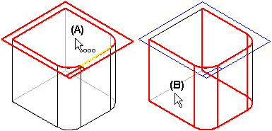
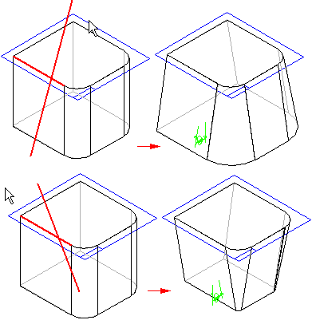

Workflow overview
To construct a simple draft feature, first select a planar face or reference plane (A) to define the draft plane of reference. Then select the faces you want to draft (B).

Last, position the cursor to define the draft direction, and click when the correct direction is displayed.

In this example, the size of the part remains the same at the top face, and either increases or decreases in size at the bottom. In other words, the draft feature adds or removes material below the pivot location.
When defining the draft plane, you are not limited to planar part faces or reference planes at the top or bottom of the part. For example, you can select a reference plane in the center of the part to use as the draft plane (A), and then use the same plane to define the pivot location (B). In this example, the size of the part remains the same at the pivot location, and material is removed above the reference plane and added below the reference plane.

How do I
Add a draft angle to a partExamples: Constructing drafts to different sides
Examples: Selecting draft faces with the chain method
Examples: Selecting draft faces with the loop sides method
Learn more
Adding draft to partsEditing add draft features
Defining the draft plane
Using parting geometry
Split draft
Step draft
Things to consider with rounds and draft angles
Look up more details
Add Draft commandAdd Draft command bar
Add Draft command bar
Add Draft command bar
Draft Options dialog box
Draft Parameters dialog box
Example: Draft Options